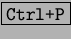
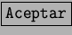

Next: Salvando nuestro esfuerzo.
Up: Primeros Pasos
Previous: Formateo de la hoja.
Índice General
El uso de la impresión dentro de la StarCalc sigue el mismo esquema que en el
resto de la suite StarOffice. Seleccionaremos el menú [Archivo] e
[Imprimir], también podemos presionar las teclas . En
ambos casos se mostrará un cuadro de diálogo. En el caso de que no necesitemos
ajustar las propiedades presionaremos  y StarCalc mandará el
trabajo a la cola de impresión.
Proyecto Cursos - LuCAS - http://lucas.hispalinux.es/htmls/cursos.html